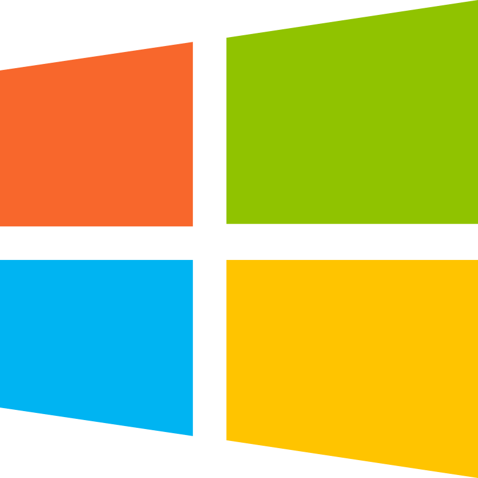
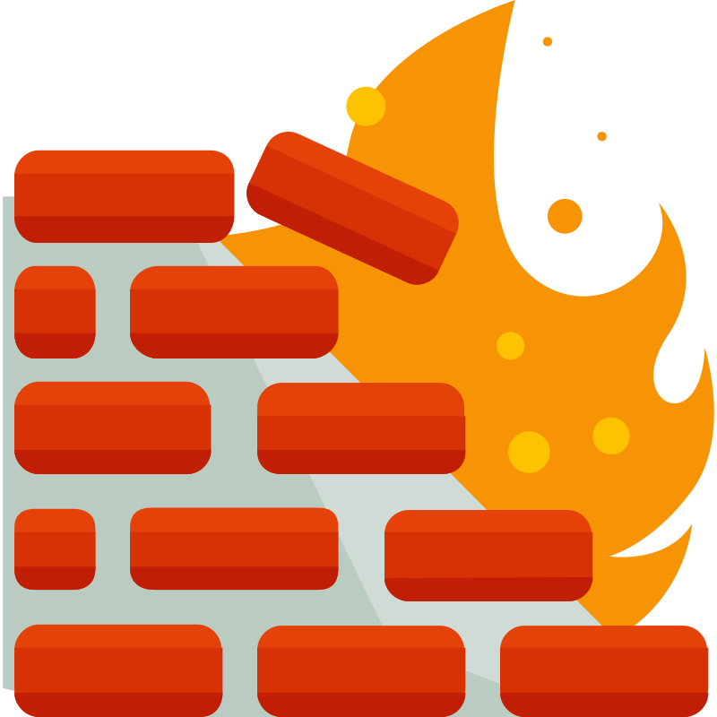
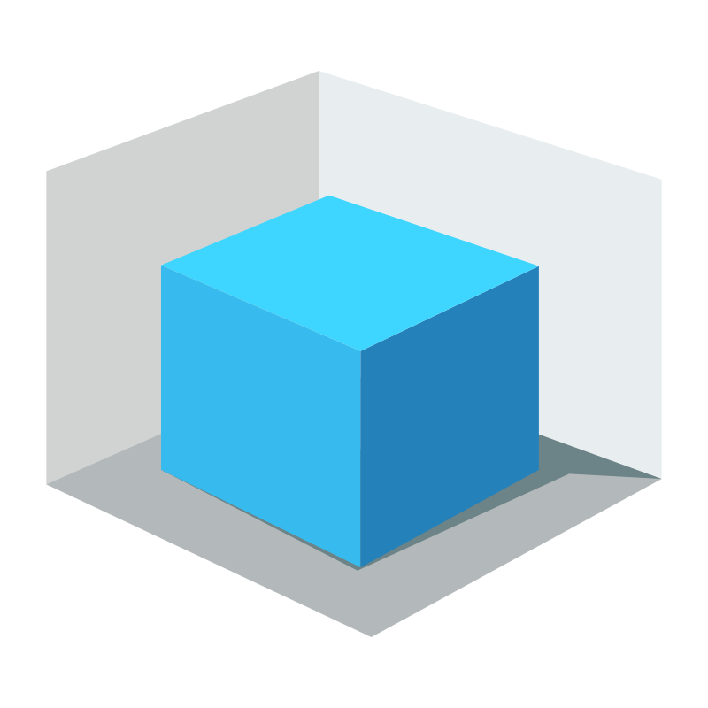
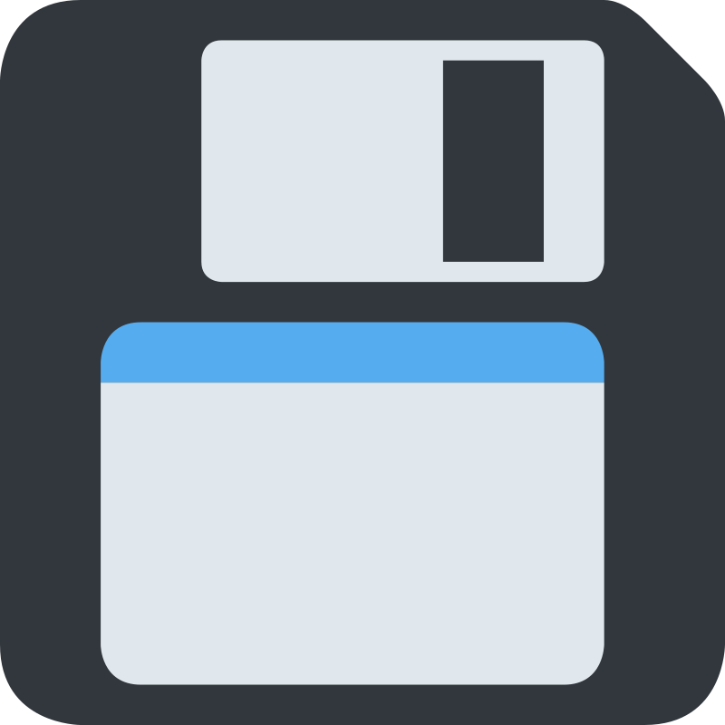
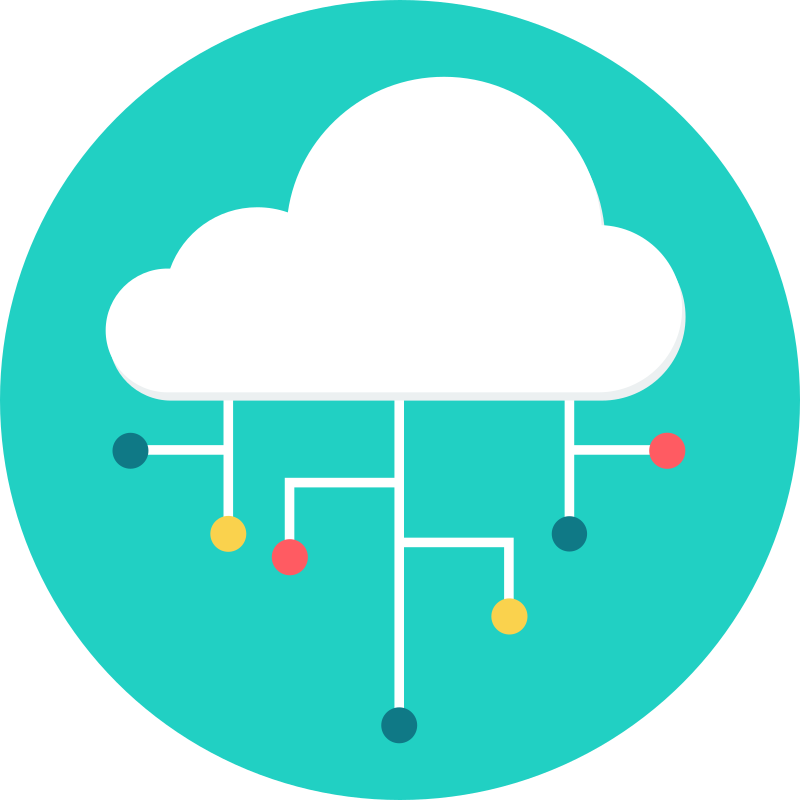

Compétences

Systèmes
J'ai acquis une maîtrise des systèmes d'exploitation (Windows, Linux) à travers mes expériences
professionnelles, mes études et des projets concrets, ce qui me permet
d’intervenir efficacement dans des environnements variés.

Réseaux
Je maîtrise les réseaux informatiques, de la configuration des équipements
actifs (switchs, routeurs) à la mise en place de services réseau, tout en
veillant à la sécurité et à la performance de l’infrastructure.

Sécurité
Plus besoin de présenter cette plateforme avec ses milliards
d'utilisateurs. Ainsi son contenu est très diversifié, et le
nombre de vidéos éducatives sur le hacking et la cybersécurité
est très important.

Bases de données
De nombreux sites web permettent de s'informer sur le hacking.
Il existe de nombreuses documentations en ligne et de tutos
permettant d'augmenter ses compétences en hacking et cybersécurité.

Virtualisation
Kali Linux est une distribution GNU/Linux basée sur Debian.
En cybersécurité, Kali Linux est un outil indispensable.
Il est fourni avec de nombreux logiciels de sécurité permettant
par exemple le test d'intrusion ou le cassage de mots de passe.

Protocoles
Plus besoin de présenter cette plateforme avec ses milliards
d'utilisateurs. Ainsi son contenu est très diversifié, et le
nombre de vidéos éducatives sur le hacking et la cybersécurité
est très important.

Services
Plus besoin de présenter cette plateforme avec ses milliards
d'utilisateurs. Ainsi son contenu est très diversifié, et le
nombre de vidéos éducatives sur le hacking et la cybersécurité
est très important.